Déploiement de Wazuh — SIEM/XDR
Projet RéaliséContexte du projet
Ce projet a été mené dans un environnement d'infrastructure réseau et sécurité d'entreprise. L'environnement de travail est un laboratoire informatique composé d'un cluster Proxmox VE 9.1.5 avec trois serveurs physiques Dell PowerEdge R320, un pare-feu pfSense, un switch Mikrotik et un NAS partagé (réseau LAN 10.10.10.0/24).
Plusieurs services étaient déjà opérationnels (Zabbix, Grafana, GLPI, UptimeKuma), mais aucun outil de sécurité centralisé ne permettait de surveiller les menaces et les journaux système de l'ensemble du parc. Mon objectif était d'y remédier en déployant Wazuh, une plateforme open source SIEM/XDR, dans un conteneur LXC sur Proxmox.
Technologies utilisées
 Debian 13
Debian 13
 Windows Server
Windows Server
Objectifs
- Centraliser les journaux de sécurité de tout le parc informatique
- Détecter les menaces, tentatives d'intrusion et comportements anormaux
- Surveiller l'intégrité des fichiers système (File Integrity Monitoring)
- Évaluer la conformité des configurations des systèmes
- Disposer d'un tableau de bord unique pour la supervision de la sécurité
Timeline de réalisation
Installation via Proxmox VE Helper Scripts
Utilisation du script communautaire disponible sur community-scripts.org pour automatiser la création d'un conteneur LXC sur le nœud pve03. L'option "Default Install" est sélectionnée pour une configuration optimale.
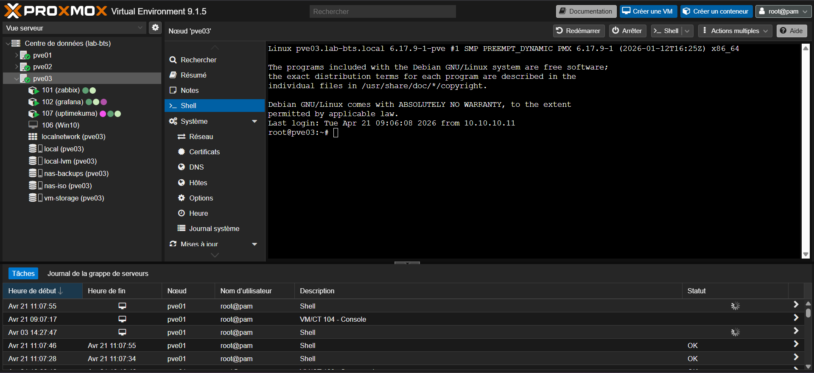
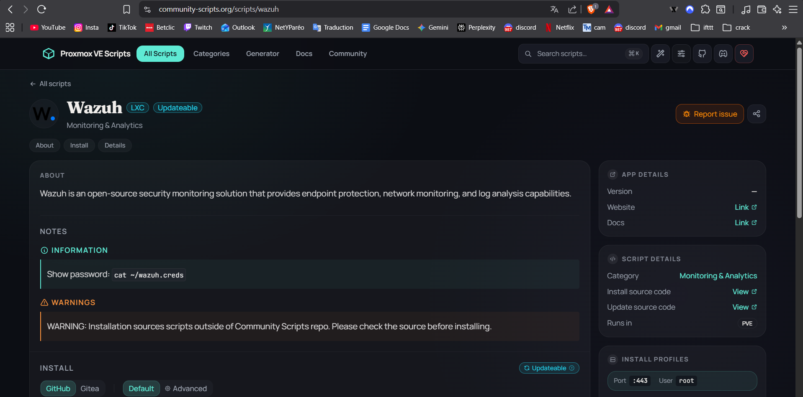
bash -c "$(wget -qLO - https://github.com/community-scripts/ProxmoxVE/raw/main/ct/wazuh.sh)"
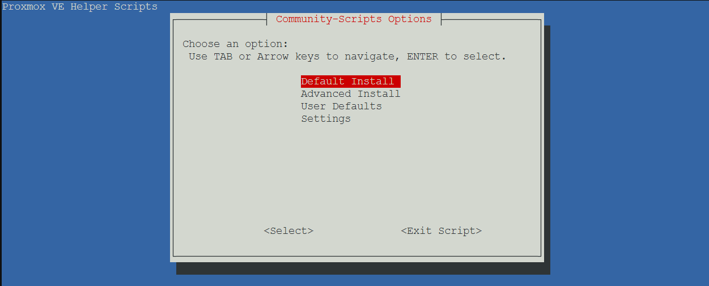
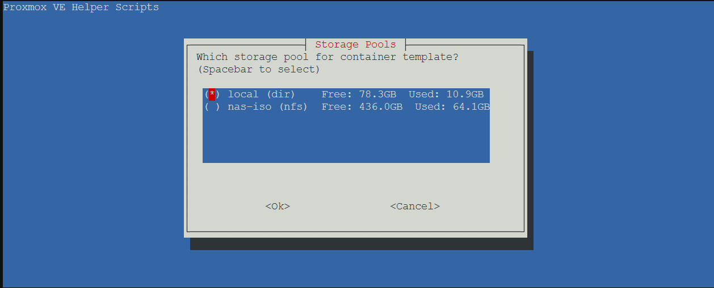
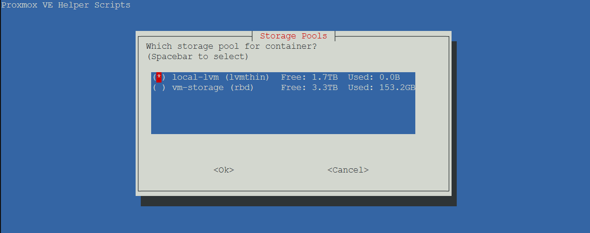
Accès au Wazuh Dashboard
Une fois l'installation terminée, les identifiants sont récupérés via la commande cat ~/wazuh.creds (utilisateur admin, mot de passe généré automatiquement). L'interface web est accessible à l'adresse :
https://10.10.10.107
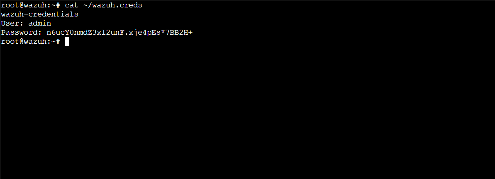
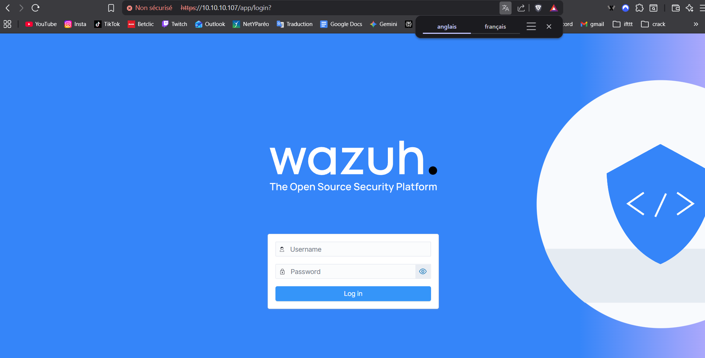
Déploiement des agents Linux (Debian)
Installation sur 4 conteneurs (GLPI, nginx proxy manager, Zabbix, Grafana) via la commande générée par le dashboard (Endpoints › Deploy new agent), avec les variables d'environnement WAZUH_MANAGER et WAZUH_AGENT_NAME.
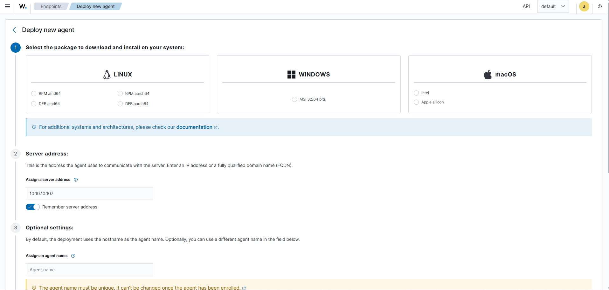
sudo systemctl daemon-reload
sudo systemctl enable wazuh-agent
sudo systemctl start wazuh-agent
sudo systemctl status wazuh-agent
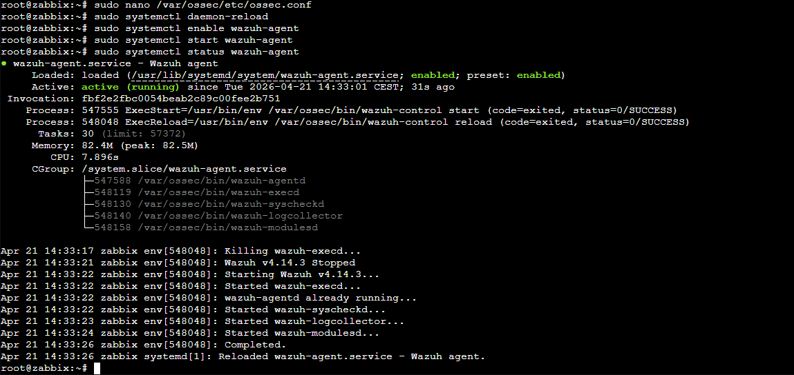
Déploiement de l'agent Windows Server (VM-DC01)
La VM Windows Server 2022 (10.10.10.20) nécessite une procédure spécifique via PowerShell. Le fichier MSI est téléchargé et installé silencieusement, puis le fichier ossec.conf est vérifié pour confirmer l'adresse du manager (10.10.10.107, port 1514 TCP).
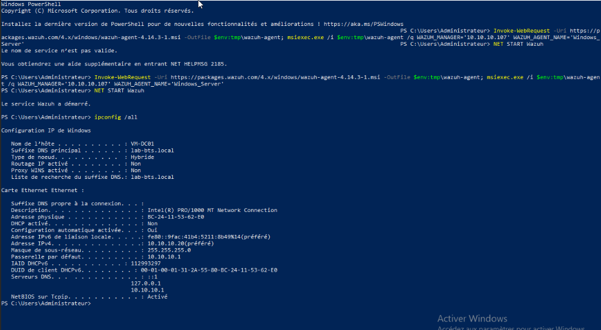
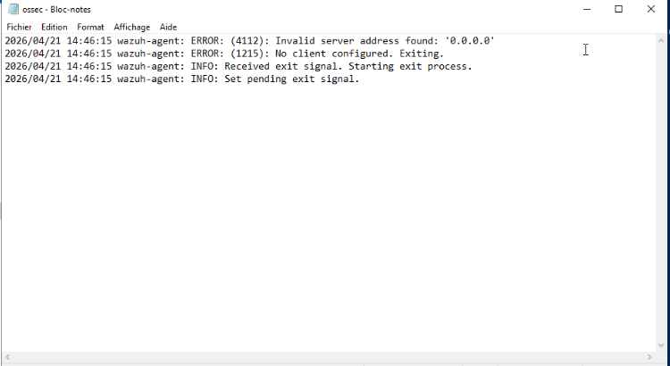
Restart-Service -Name WazuhSvc
Résolution des incidents
Dépendance manquante lsb-release sur Debian 13. Résolution : sudo apt --fix-broken install, puis configuration manuelle de /var/ossec/etc/ossec.conf.
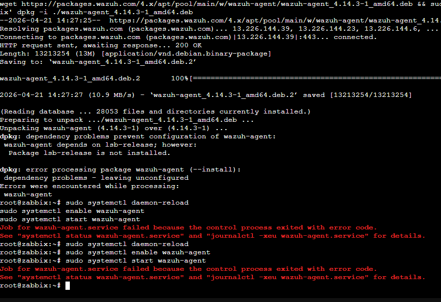
Erreur "Le nom de service n'est pas valide" avec NET START Wazuh. Cause : le service MSI s'appelle WazuhSvc. Résolution : Restart-Service -Name WazuhSvc.
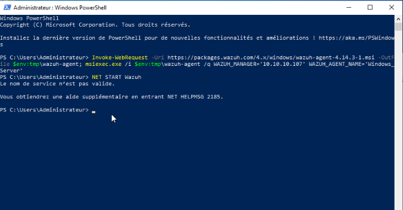
L'agent retournait l'erreur Invalid server address found: '0.0.0.0'. Résolution : modification de la balise <address> dans ossec.conf pour y renseigner 10.10.10.107.
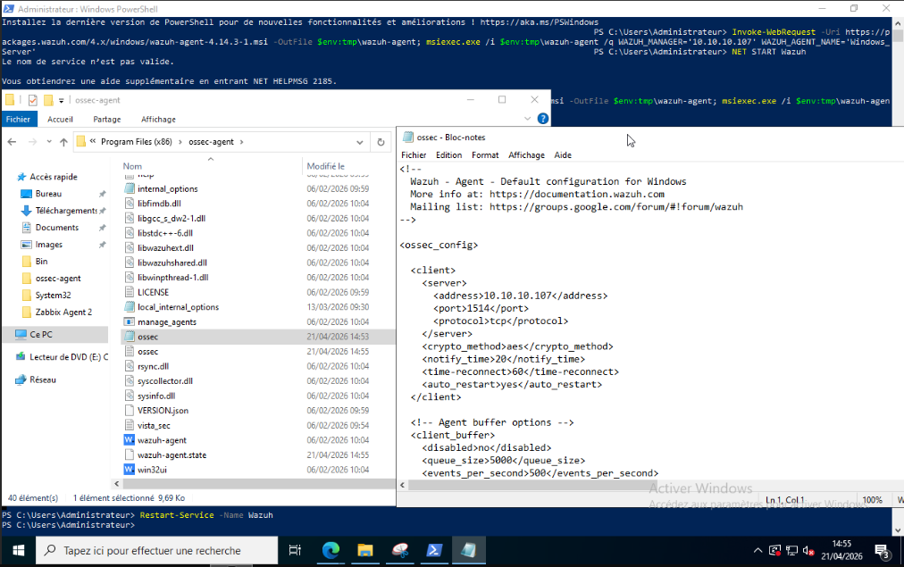
Résultats obtenus
Les 5 agents connectés : GLPI (10.10.10.105), nginx proxy manager (10.10.10.102), Zabbix (10.10.10.103), Grafana (10.10.10.104) — tous Debian GNU/Linux 13 — et VM-DC01 (10.10.10.20) sous Windows Server 2022.
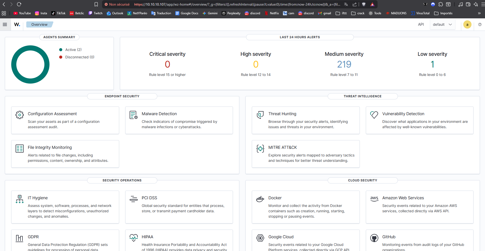
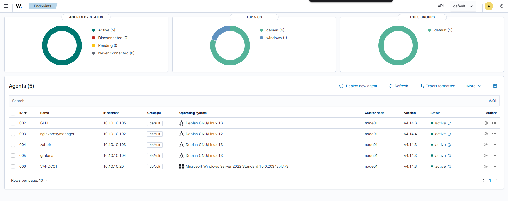
Compétences acquises
| Compétence | Description |
|---|---|
| Virtualisation LXC | Création et gestion de conteneurs LXC sur Proxmox VE |
| Architecture SIEM/XDR | Compréhension du modèle manager / agents et des flux de logs |
| Administration Linux | Configuration de services système avec systemctl sous Debian |
| PowerShell & Windows | Installation et gestion d'agents sur Windows Server 2022 |
| Gestion de paquets | Résolution de dépendances avec dpkg et apt |
| Configuration XML | Analyse et modification du fichier ossec.conf |